| 区切り | 第1回 第2日 |
| 日付 | 2025年2月13日 |
| 区間 | 霊山寺 → 安楽寺 |
| 歩行距離 | 約25.2 km |
| 札所 | 1〜7番（霊山寺〜十楽寺） |
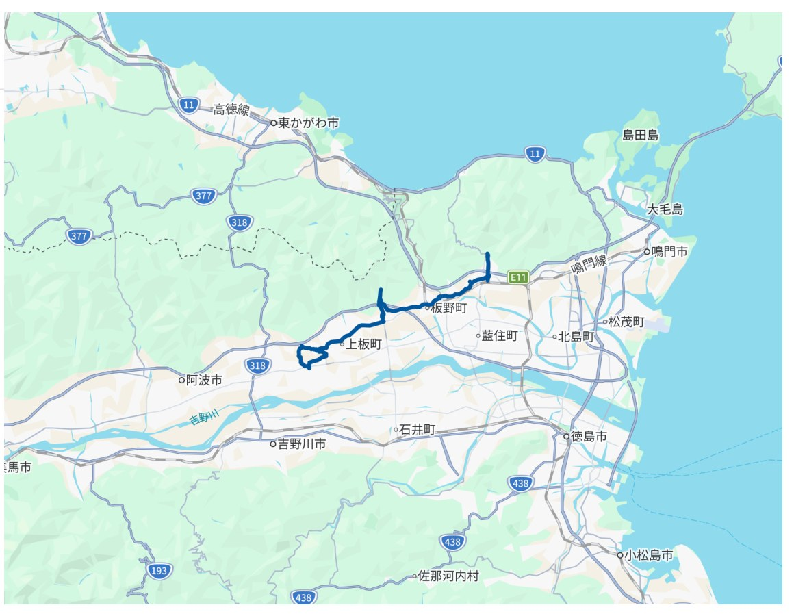
早朝，7時前に宿を出る．霊山寺は宿の目の前，8時から納経所や売店が営業を始めるのでかなり早めな出発であるが，その前に訪ねておきたかった神社があった．阿波一宮，大麻比古神社．長大な参道に続く広い境内に，ご神木の楠と建築をゆったりと構える．お遍路旅の完遂と安全を祈願して手を合わせた．
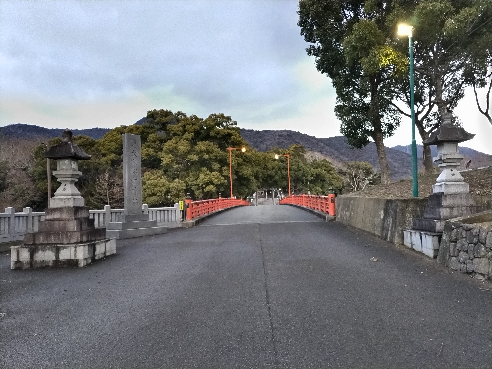
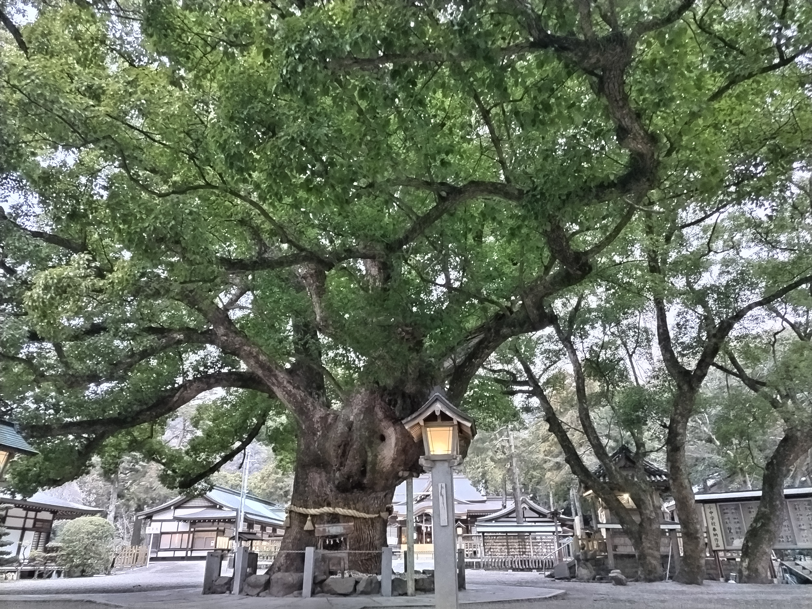
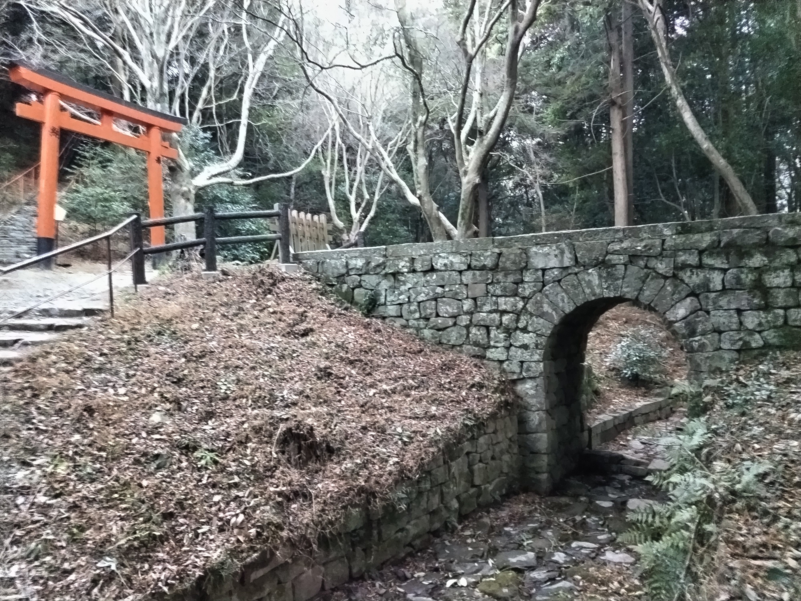
神社から引き返し，1番札所・霊山寺へ．残りの遍路用具を購入しようと敷地内をしばらくうろつく．同じく遍路用具を求めていた歩き遍路のおじさまと困っていたところ，納経所に向かえばよいとわかる．白衣，菅笠，輪袈裟を購入．遍路衣装で重要なのは一目でお遍路だと判別できること，ーーお接待を受けることもお遍路の仕事なのである．ここで，金剛杖を持たなかったことに気づく方がいらっしゃるだろうか．杖は今後飛行機移動などを考えたときに運搬が面倒なこと，山地はともかく平地ではむしろ負担が増すことなどを考慮して使わなかった．さて，先に準備を終えたお遍路のおじさま（仮に，大麻氏と名付けよう）とはここで別れる．本堂・大師堂で一通り読経して再度納経所へ戻り，500円を払って納経印を支払った．なお，この納経所ではクレジットカードが使用できなかったため手持ちの現金のかなりの割合を使用してしまっている．ここでの現金の消費が大打撃であったことに後で気が付くこととなる．
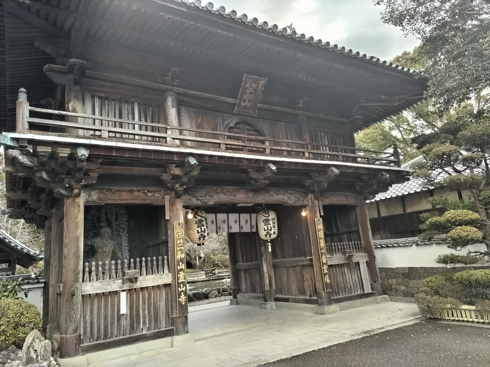
10番札所までの吉野川北岸地域は札所間距離が短くほとんど平地を進むため，いわゆるチュートリアルゾーンとなっている．この区間で諦める人はまずいないので，お遍路同業者の人口密度も高くなっている．脱力を意識しながら中央構造線を眺め，ひたすら西進するのみ．
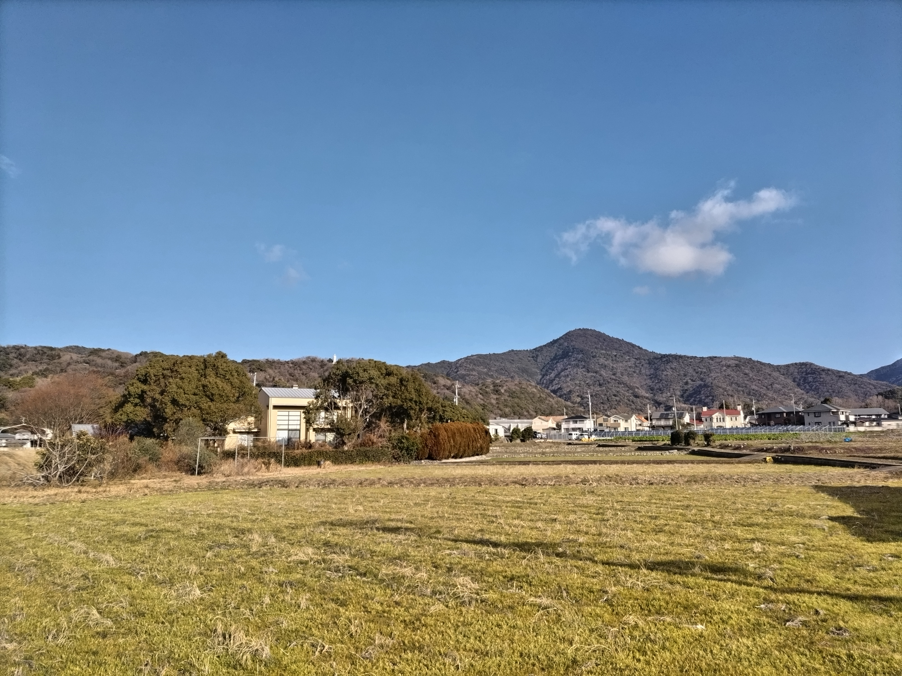
2番札所・極楽寺，3番札所・金泉寺まで平坦な住宅街を抜ける．札所の密度が高いと一つ一つがあまり印象に残らない．
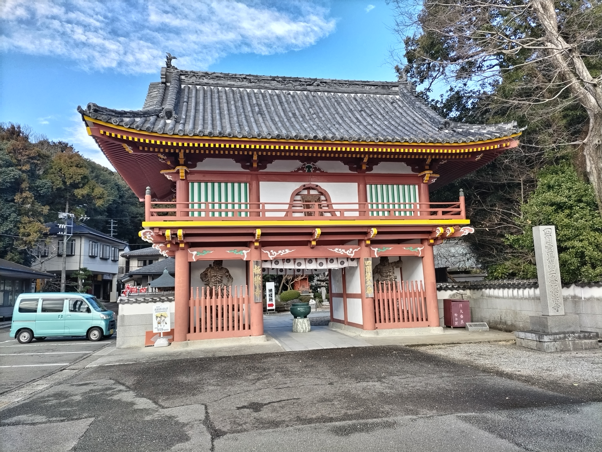
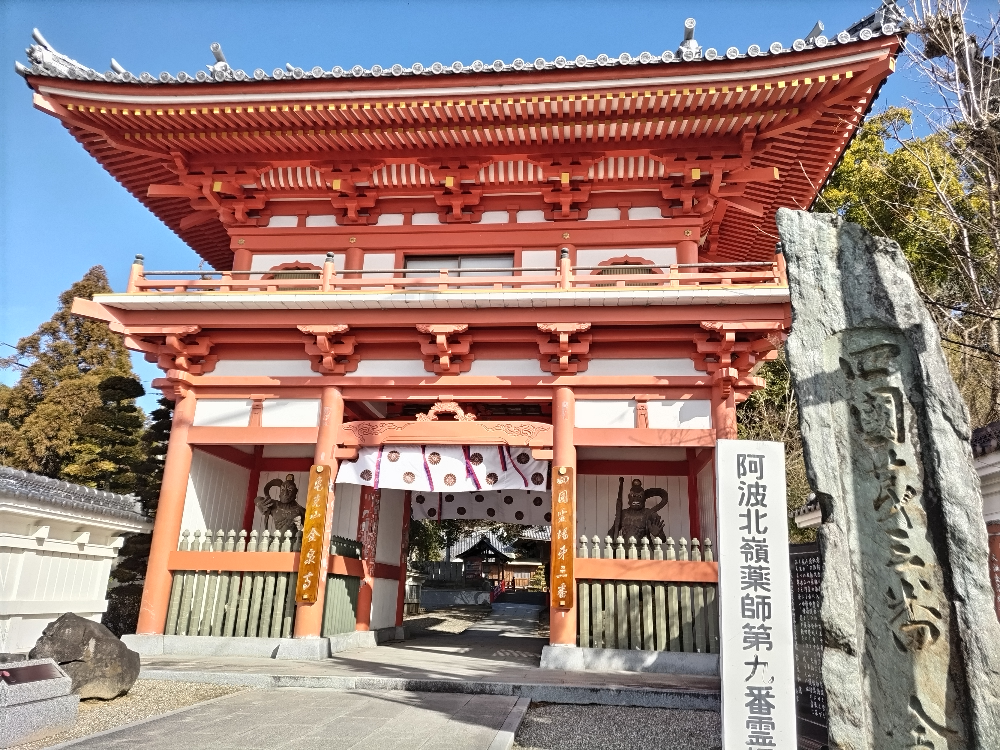
4番札所・大日寺．お遍路において最もよく見る寺号．山号や院号も意識して納経したいものだが勉強不足であまりよく理解していない．そういえば，納経の次第には各寺院のご本尊によって異なる文言を唱える「ご本尊真言」というものがある．本記事執筆時もまだそれほどの余裕を持つに至っていないが，各寺院が何を本尊としているのかといったところも本来意識すべきであるし，寺院の由来・成り立ちや建築的側面など勉強すべきことは無限に生まれてくるものである．こうして2周，3周，……，と重ねていくものなのかもしれない．
話が逸れた．ここの大日寺は初めての山寺である．木々に囲まれ，起伏をもった遊歩道を歩くための，また，遍路道を見失わないためのチュートリアル．ここ10年ほどで遍路道の目印となるステッカーの整備が一気に進んでいるようだ．電柱や道路標識のポール，ガードレールなどに貼られた数種類のステッカーをたどることで地図を見ずに遍路道を歩くことができる．地図アプリがあるとはいえ，スマホの充電を節約したい我々にとっては非常に助かるものである．大日寺までの道のりは多くのお遍路が最初に道に迷うところであろう．他人の家の庭の脇のような狭い道や林の中を突っ切ってゆく．今回が3周目だというお遍路のおじいさま（仮名：板野氏）の記憶が私を案内してくれた．板野氏と別れて早足に進む．大日寺から重複経路を戻る大麻氏とすれ違う．私の菅笠が風で飛ばされそうになるのを目撃された．
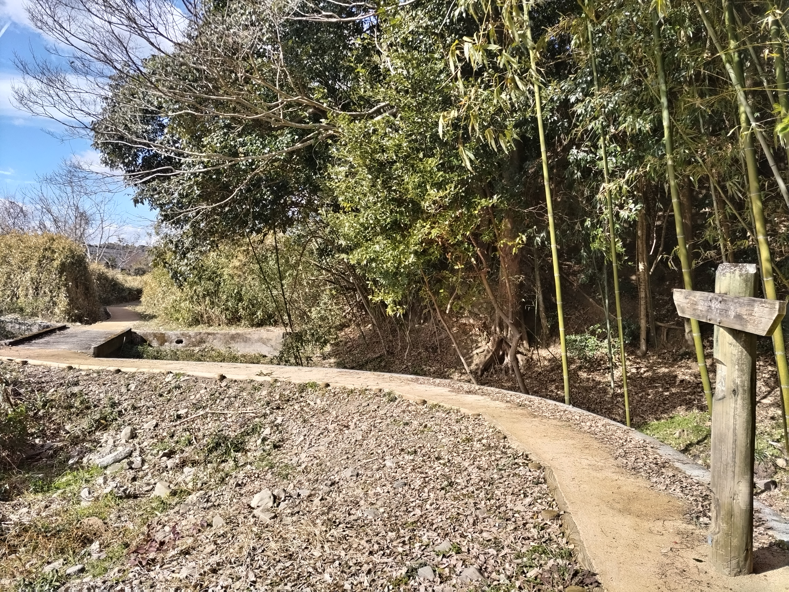
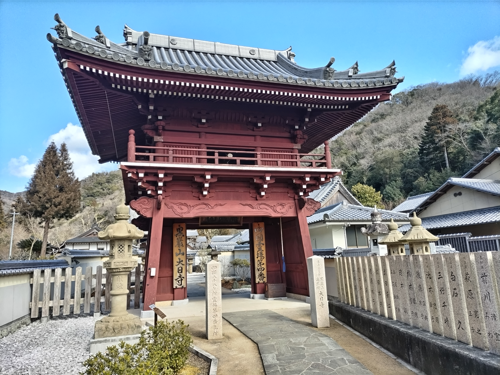
大日寺の納経所でスナックのお接待を頂く．お遍路が「始まって」からの初お接待．5番札所・地蔵寺へは坂を下って間もなく到着．納経後，近くの中華料理店で昼食をとる．
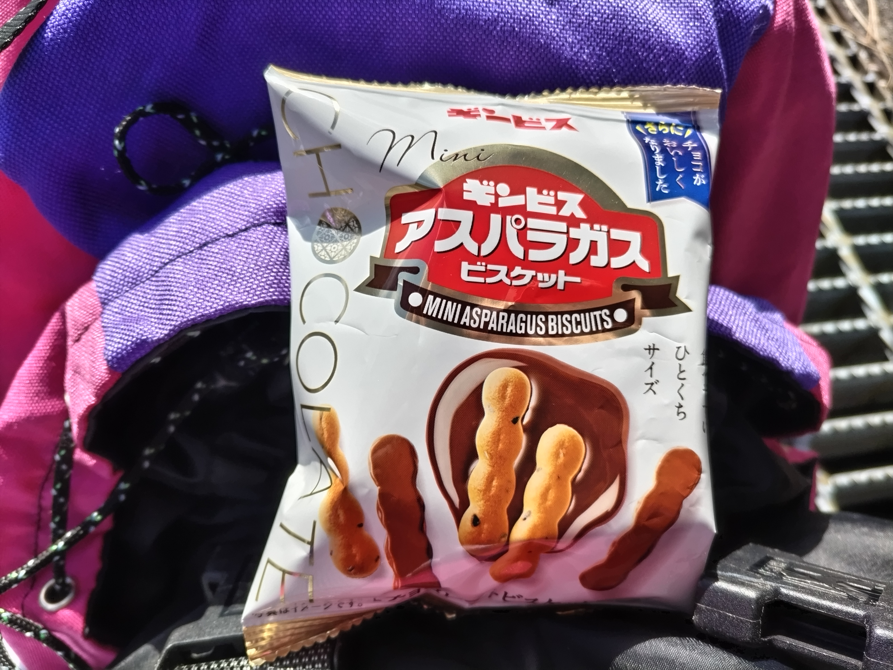
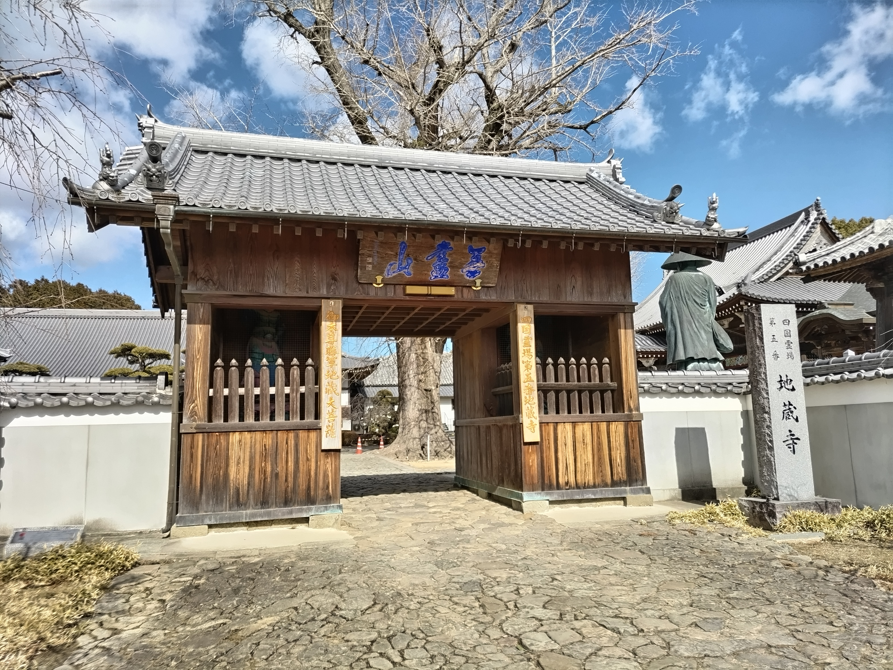
スナック菓子をつまみながら6番札所・安楽寺へ．そういえばこの日の宿はまだ確保していない．安楽寺の通夜堂で寝泊まりができるという情報をインターネットで確認していたので納経所で尋ねてみると，ここでの宿泊を承諾していただいた．通夜堂というのは本来夜通しで行う修行を行うための建物である．転じて，札所ではお遍路客を無償で泊めるための空間を確保してくださるところがある．そこにマットや寝袋を敷いて夜を越すというものだ．ともかく，今日の寝床を早めに確保することができた．まだ15時台と夜までは時間があるので，近くの7番札所・十楽寺まで済ませる．
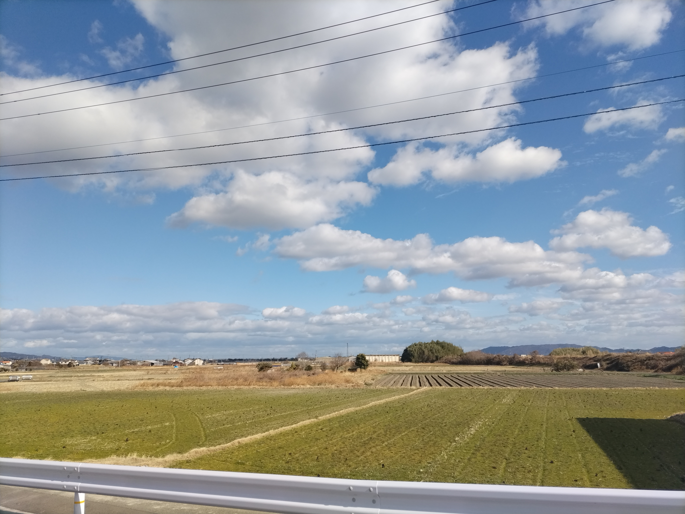
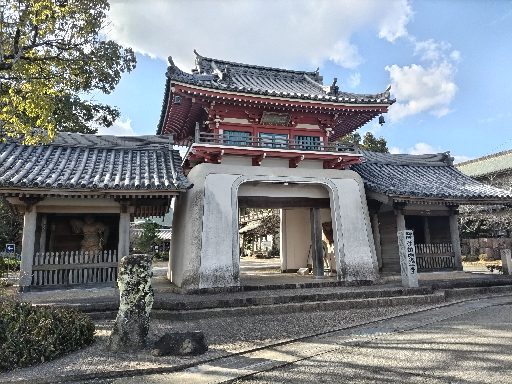
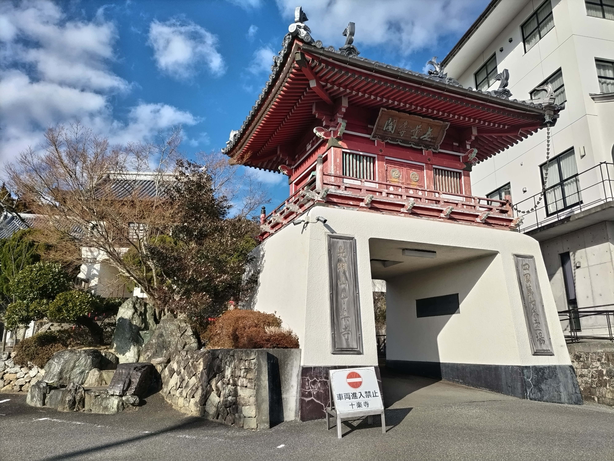
十楽寺まで打ち終えたが，その日のタスクはいくらか残っていた．第一に寝床に使用するマットの用意である．寝袋は0℃近くまで耐えられる冬用のものをお遍路のためにアウトドア用品店で購入していたが，マットはかさばるので現地調達を予定していた．よく考えればこの後持ち歩くことになるので先に買っていたところでほとんど変わらないのであった．そして，第二に当日夜と翌日朝の朝食の用意，第三に衣服の洗濯である．下着は3着分，それ以外は2着ずつくらい持っていた．この分量が上限になるだろう．
これらのタスクが一気に片付くスポットが近く，とはいえ十楽寺と安楽寺から徒歩30分くらいの距離の場所にあった．コインランドリーに洗濯物を放り込み，ホームセンターで銀マットを，ディスカウントショップでパンだったかおにぎりだったかを購入．コインランドリーにて車で来られた地元のおじさまに話しかけられる．安楽寺まで車で送ろうかという申し出を断る．自分の脚で旅程を完遂したかった．本当に完遂できるのか？ 自分の体力を甘く見積もっていないか？ 往復徒歩1時間の寄り道を行う余裕はあったのか？ おじさまとの会話で自省を始める．彼の短い申し出の言葉の内に気が引き締まる思いがした．
安楽寺へ戻る前に明日の夜の宿をとる．明日は経路の都合上移動距離を稼ぐことができないため，計画が立てやすい．宿へ電話をすると，今日はどこに泊まるのかと尋ねられた．安楽寺の通夜堂と答えると，つまり野宿ね，と．野宿，人生初の野宿，このときはじめてその自覚に至った．冬の野宿，寒さに耐えなければならない．
安楽寺の通夜堂，正確には山門に付属する鐘撞堂に向かう頃には完全に日が落ちていた．親切な方が置いていったのか，冬の夜を越すには心許ない程度のマットが鐘の横に置かれている．ここに銀マットと寝袋を敷き，初めての野宿に挑む．
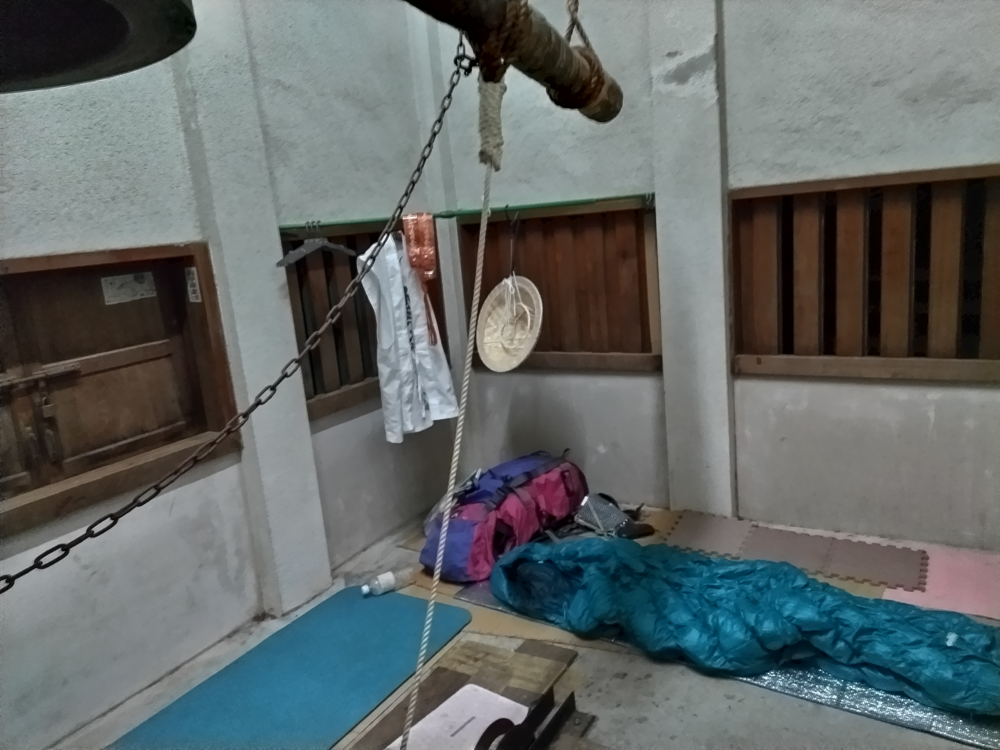